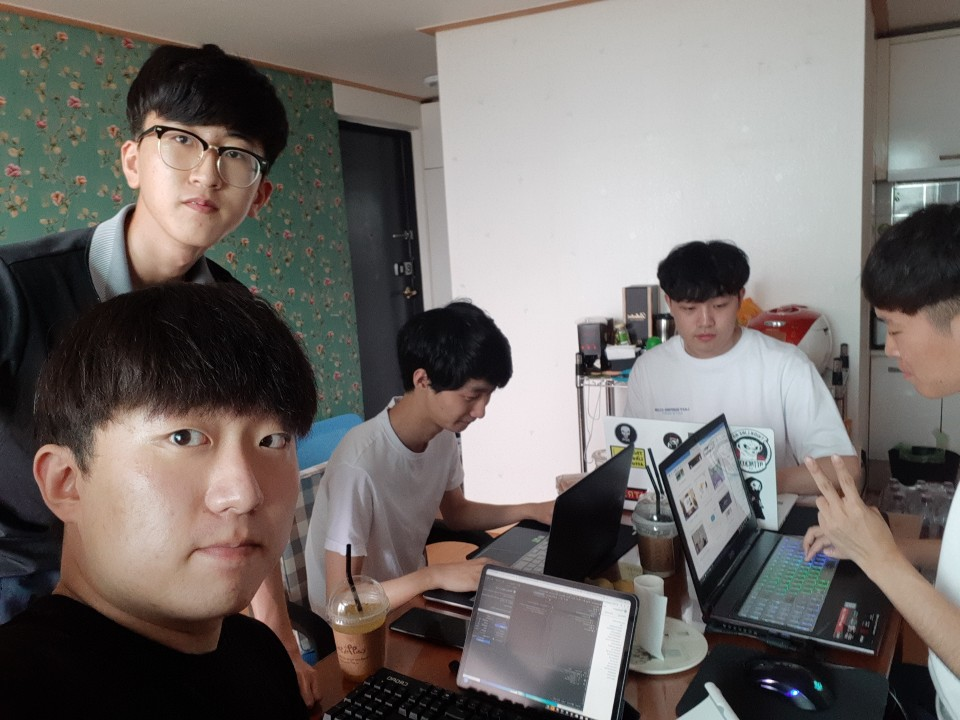

오늘은 세번째 모각코를 한 날짜입니다.
오늘은 모든 인원이 함께 모여 코딩을 했어요.
목표 공유와 회고
김경민: 웹 페이지 CSS구축
오늘은 Bottom Up 프로젝트를 진행하기 위해 가장 기초적인 작업인 웹 사이트의 디자인을 담당하는 웹 사이트 CSS를 만드는 일을 했습니다. 나무위키를 오마주로 하여 비슷한 템플릿을 만들고 마음에 드는 폰트를 적용하여 예쁘게 꾸며보았습니다.
문영균: 안드로이드 스튜디오를 활용해 날씨 어플 제작
오늘은 Bottom Up 프로젝트를 위해 현재위치 가져오는 앱 만들었습니다. 현재 위치를 기반으로 위치정보를 서버로 보내 API로 받아와서 현재 위치의 날씨, 습도, 미세먼지등을 사용자에게 알려주는게 최종적인 Bottom Up프로젝트의 목표인데 오늘은 디자인을 제외한 모든 부분을 만드는 작업을 하였습니다.
박재우: 안드로이드 스튜디오를 활용해 날씨 어플 제작
오늘은 Bottom Up 프로젝트를 위해 현재위치 가져오는 앱 만들었습니다. 현재 위치를 기반으로 위치정보를 서버로 보내 API로 받아와서 현재 위치의 날씨, 습도, 미세먼지등을 사용자에게 알려주는게 최종적인 Bottom Up프로젝트의 목표인데 오늘은 디자인을 제외한 모든 부분을 만드는 작업을 하였습니다.
안준혁: 웹 페이지 만들기
오늘은 데스크톱에 아톰를 설치하고 아톰를 이용하여 HTML파일을 직접 수정하여 홈페이지를 만드는 시간을 가졌습니다.
유찬희: 안드로이드 스튜디오를 활용해 날씨 어플 제작
오늘은 Bottom Up 프로젝트를 위해 현재위치 가져오는 앱 만들었습니다. 현재 위치를 기반으로 위치정보를 서버로 보내 API로 받아와서 현재 위치의 날씨, 습도, 미세먼지등을 사용자에게 알려주는게 최종적인 Bottom Up프로젝트의 목표인데 오늘은 디자인을 제외한 모든 부분을 만드는 작업을 하였습니다.